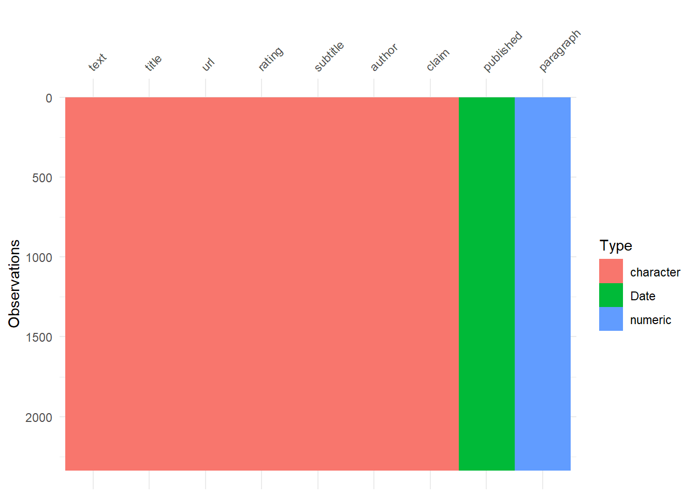
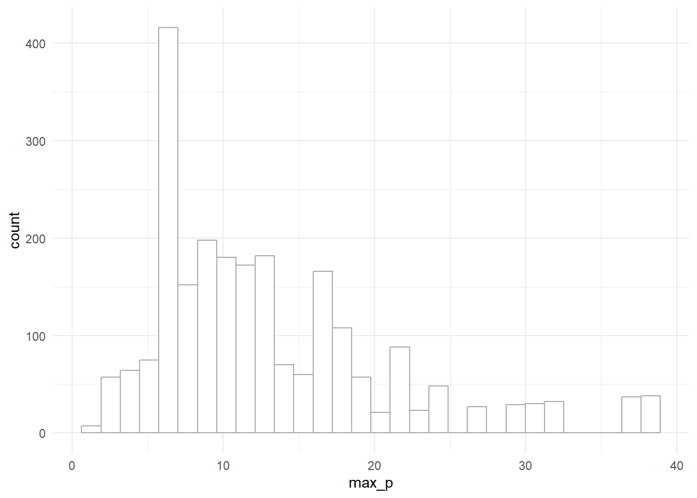

Looking at the snopes.com articles as a part of #TidyTuesday Week 44 (Oct 31, 2023)
#TidyTuesday
Author
Aditya Dahiya
Published
October 31, 2023
Loading Libraries and Data
Code
# Loading librarieslibrary(tidyverse) # for everything tidy manipulation and plotlibrary(gt) # for nice tableslibrary(visdat) # for visualizing datalibrary(tidytext) # Text Evaluationlibrary(rvest) # Web-scraping for complete articles# Read data directly from GitHub# horror_articles <- readr::read_csv('https://raw.githubusercontent.com/rfordatascience/tidytuesday/master/data/2023/2023-10-31/horror_articles.csv')# Using harvested data - to include complete text of all articleshorror_articles <-read_csv("horror_legends.csv")vis_dat(horror_articles)

Alternate: Cleaning Script from #TidyTuesdaywebpage
Code
library(tidyverse)library(here)library(fs)library(rvest)working_dir <- here::here("data", "2023", "2023-10-31")urls <-paste0("https://www.snopes.com/fact-check/category/horrors/?pagenum=",1:15)extract_rating <-function(article_page) { rating <- article_page |> rvest::html_element(".rating_title_wrap") |> rvest::html_text2() |> stringr::str_remove("About this rating")if (is.na(rating)) { rating <- article_page |> rvest::html_element(".status_color") |> rvest::html_text2() }if (is.na(rating)) { rating <- article_page |> rvest::html_elements("noindex") |> rvest::html_text2() |> stringr::str_squish() |> stringr::str_subset("^Status:") |> stringr::str_remove("Status:") } rating <-tolower(rating) |> stringr::str_squish() |> stringr::str_remove("\\.|\\:") rating <- dplyr::case_match( rating,c("a number of real entries, one unknown, and one fiction","multiple","multiple — see below","two real entries, the others are fiction" ) ~"mixture",.default = rating )return(rating)}extract_claim <-function(article_page) { claim <- article_page |> rvest::html_element(".claim_cont") |> rvest::html_text2() |> stringr::str_squish()if (is.na(claim)) { claim <- rvest::html_elements(article_page, "p") |> rvest::html_text2() |> stringr::str_subset("^Claim:") |> stringr::str_remove("Claim:") |> stringr::str_squish() }return(claim)}horror_articles <- urls |> purrr::map( \(article_list_url) { article_list_url |> rvest::read_html() |> rvest::html_elements(".article_wrapper") |> purrr::map( \(article) {# Grabbbing info from this page can result in truncation. Instead grab the# URL and dig into that. url <- article |> rvest::html_element("a") |> rvest::html_attr("href") article_page <- rvest::read_html(url) tibble::tibble(title = article_page |> rvest::html_element("h1") |> rvest::html_text2(),url = url,# Failed for some articles <= 2015-05-16rating =extract_rating(article_page),subtitle = article_page |> rvest::html_element("h2") |> rvest::html_text2(),author = article_page |> rvest::html_element(".author_name") |> rvest::html_text() |> stringr::str_squish(),published = article |> rvest::html_element(".article_date") |> rvest::html_text2() |> lubridate::mdy(),# Failed for some articles <= 2015-05-16claim =extract_claim(article_page) ) } ) |> purrr::list_rbind() } ) |> purrr::list_rbind()readr::write_csv( horror_articles, fs::path(working_dir, "horror_articles.csv"))
Exploratory Data Analysis
Two authors dominate the articles’ authorship
Code
horror_articles |>count(author, sort =TRUE)
# A tibble: 13 × 2
author n
<chr> <int>
1 Barbara Mikkelson 1440
2 David Mikkelson 611
3 Snopes Staff 98
4 Kim LaCapria 40
5 Brooke Binkowski 26
6 David Emery 23
7 Dan Evon 22
8 Dan MacGuill 22
9 Bethania Palma 21
10 Jordan Liles 13
11 Arturo Garcia 12
12 Alex Kasprak 7
13 Madison Dapcevich 2
# A tibble: 5 × 3
published word n
<date> <chr> <int>
1 1999-02-27 films 38
2 1999-02-27 real 38
3 1999-02-27 snuff 38
4 1998-03-01 decades 37
5 1998-03-01 hiv 37
Now, let us try in the claim. First seeing how long the claims are: –
# A tibble: 5 × 3
published word n
<date> <chr> <int>
1 1999-02-27 camera 38
2 1999-02-27 entertainment 38
3 1999-02-27 films 38
4 1999-02-27 murdered 38
5 1999-02-27 participants 38
Again, not enough words to plot. Let’s see if we can download the complete article text? Yes, we can!
Finding common words in complete text by dates
Code
# Number of common words to plotcommon_n <-9stop_words <-bind_rows(stop_words,tibble(word =c("nbsp", "nobr", "dt", "dd"),lexicon ="CUSTOM" ))tidy_horror <- horror_articles |>select(text, paragraph, title, published) |>unnest_tokens(output ="word", input = text) |>anti_join(stop_words) common_words <- tidy_horror |>count(word, sort =TRUE) |>slice_head(n = common_n) |>pull(word)tidy_horror |>filter(word %in% common_words) |>mutate(word =fct(word, levels = common_words)) |>count(published, word, sort =TRUE) |>ggplot(aes(x = published, y = n, col = word)) +geom_smooth(se =FALSE, span =0.2) + gghighlight::gghighlight() +facet_wrap(~ word, ncol = (common_n %/%3)) +labs(title ="The most common words in snopes.com articles over time",y ="Number of times the word appears in the articles",x =NULL) +scale_x_date(date_breaks ="3 year",date_labels ="%Y") +theme_minimal() +theme(legend.position ="none",panel.grid.minor =element_blank(),panel.grid.major.y =element_blank(),axis.text.x =element_text(angle =90),plot.title.position ="plot")
# seeing the distribution of the number of paragraphs in each articlehorror_articles |>select(title, paragraph) |>group_by(title) |>mutate(max_p =max(paragraph)) |>ggplot() +geom_histogram(aes(max_p), col ="darkgrey", fill ="white") +theme_minimal()

Code
# One time download / agree to license of get_sentiments()# get_sentiments("afinn")# get_sentiments("bing")get_sentiments("nrc")
# A tibble: 13,872 × 2
word sentiment
<chr> <chr>
1 abacus trust
2 abandon fear
3 abandon negative
4 abandon sadness
5 abandoned anger
6 abandoned fear
7 abandoned negative
8 abandoned sadness
9 abandonment anger
10 abandonment fear
# ℹ 13,862 more rows